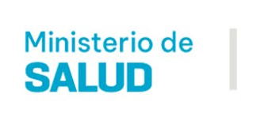
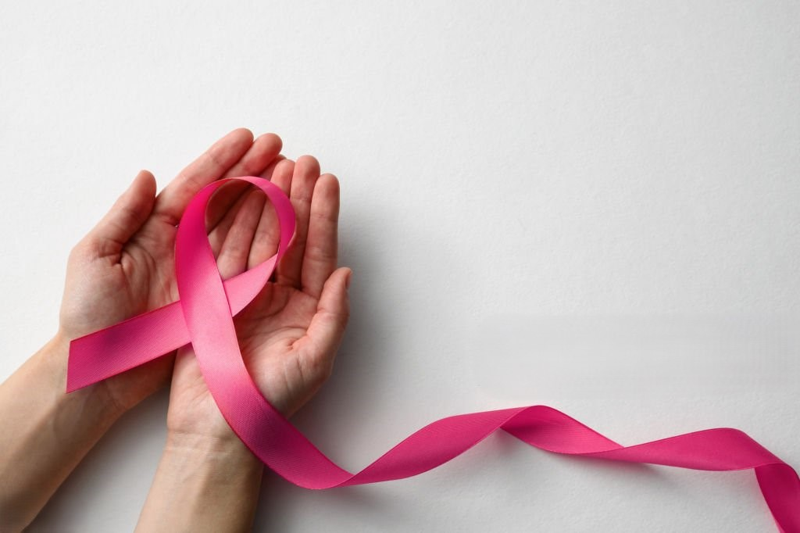

Inicio
Institucional
Trámites y Servicios
Contacto
Novedades
Destacadas
Novedades
Campañas
Material de difusión
Destacadas
Novedades
Región Centro: Córdoba fue sede de una nueva reunión de la Mesa de Salud.
Salud Preventiva en Movimiento: el Recorrido del Mamógrafo Móvil en el Norte Provincial.
Día Mundial del ACV: La red de asistencia provincial brinda contención a los pacientes.
Campañas

Previous
Next
Material de difusión
Crianza Responsable.
Consumo Responsablede Alcohol.
Donar Sangre
Lactancia materna
La embarazada y su bebé.
Consumo Responsable de Tabaco.